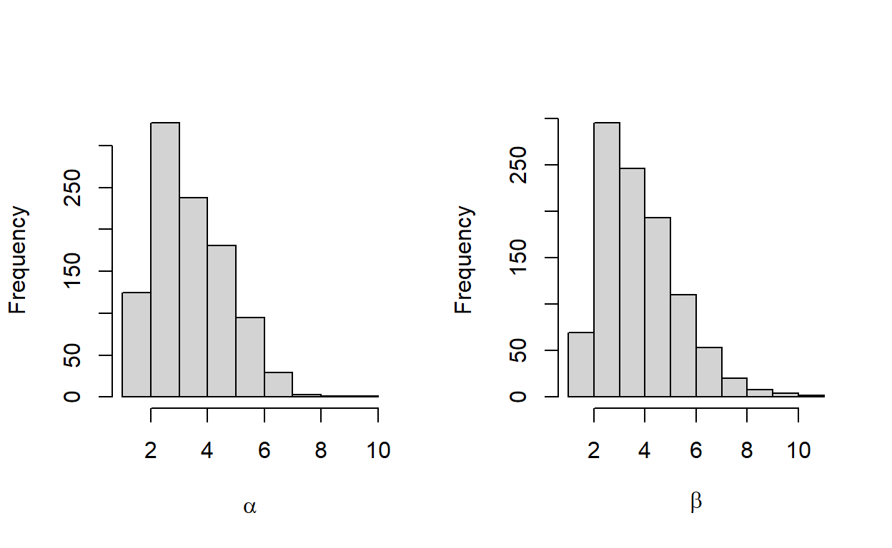
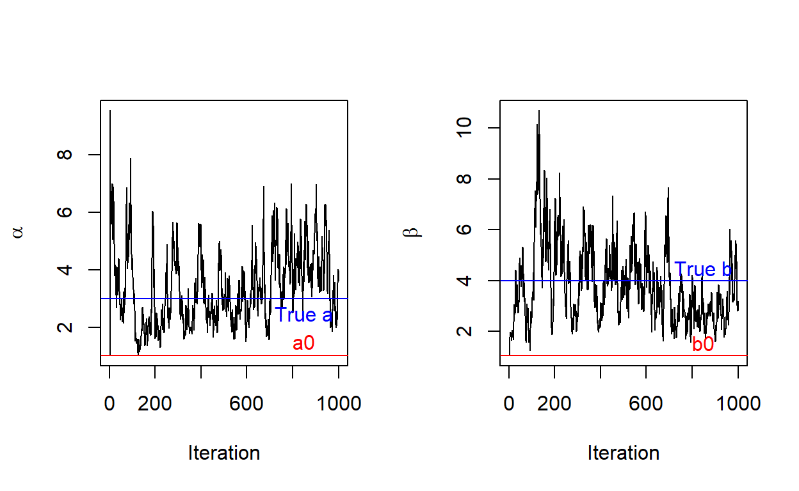

Some additional details about the website
Gibbs sampling is used for multivariate distributions, or distributions that depend on more than one variable. Two types of multivariate distributions are joint and conditional.
Joint Probability Distribution - probability based on two independent variables (ex. p(x, y))
Conditional Probability Distribution - variables are dependent on each other (ex. p(x) given Y = y)
Markov Chain Monte Carlo is used to estimate probabilities by simulating repetitions of an experiment. It is usually used in situations where an exact probability is difficult to calculate. [Larsen & Marx, 2018]
MCMC: Metropolis Hastings
Metropolis Hastings is a classic MCMC method used to obtain a sequence of random samples where the direct distribution is hard to find. In this method, a proposed distribution is utilized to sample new states. At each iteration, a new state is proposed. Gunderson, 2020
Metropolis Hastings also utilizes an acceptance rate. When you get a random sample, a probability equation is used to decide whether or not to accept the new, proposed values. Gibbs Sampling is a special case of Metropolis Hastings with conditional distributions and an acceptance rate = 1. This means that in Gibbs Sampling, the new proposed state is accepted 100% of the time. Jingyi Jessica Li
Gibbs Sampling is a Markov Chain Monte Carlo (MCMC) method that that is used for multidimensional models. Gibbs is used when sampling using joint distributions is too difficult, but it is easy to sample from conditional probabilities.
Gibbs Sampling Definition Suppose we want to obtain \(n\) samples of \(X = (x_1, x_2, x_3, ..., x_m)\) from a joint distribution \(p(x,y)\).
In Gibbs sampling, we will sample each \(x^m\) conditional on others, that is, in iteration \((n+1)\):
\[ \begin{aligned} x_{n+1}^{(1)}&\sim P(x^{(1)}|x_n^{(2)},x_n^{(3)},...,x_n^{(m)}) \\ x_{n+1}^{(2)}&\sim P(x^{(2)}|x_{n+1}^{(1)},x_n^{(3)},...,x_n^{(m)}) \\ x_{n+1}^{(m)}&\sim P(x^{(m)}|x_{n+1}^{(1)},...,x_{n+1}^{(m-1)}) \end{aligned} \]
In Practice
1. Set \((x_0,y_0)\) to some starting value.
2. Sample \(x_1 \sim p(x|y_0)\). Alternatively, \(X|Y = y_0\). This produces \((x_1, y_0)\).
3. Then, sample \(y_1 \sim p(y|x_1)\) to arrive at the second point in the distribution \((x_1,y_1)\)
4. Repeat steps 2 and 3, \(n\) times.
This produces a sequence of pairs of random variables, \((X_0,Y_0),(X_1,Y_1),(X_2,Y_2),...\), which satisfies the property of being a Markov chain. Note that the conditional distribution of \((X_i,Y_i)\), given all the previous pairs, only depends on \((X_{i-1},Y_{i-1})\) Steorts
In a Bayesian Perspective
Gibbs Sampling can be used to simulate a Markov chain distribution of unknown parameter \(\theta\). Lets call this distribution \(\pi (\theta)\).
Step 1: Sample \(\theta_1^{(m)}\) from \(\pi(\theta_1 | \theta_2^{(m-1)}, \theta_3^{(m-1)},..., \theta_4^{(m-1)})\)
Step 2: Sample \(\theta_2^{(m)}\) from \(\pi(\theta_2 | \theta_1^{(m)}, \theta_3^{(m-1)},..., \theta_d^{(m-1)})\)
Step r: Sample \(\theta_r^{(m)}\) from \(\pi(\theta_r | \theta_1^{(m)}, \theta_2^{(m)},..., \theta_{r-1}^{(m)})\)
By the Monte Carlo rules, it is easy to show that if \(\theta^{(m-1)}\sim \pi(\theta)\), then \(\theta^{(m)}\sim \pi(\theta)\), and thus is the distribution \(\pi (\theta)\). Pritchard et al., 2000
Mixing Rate: refers to how quickly the sample averages converge
Indicates converging to a reasonable probability distribution
A faster mixing rate means that the algorithm mixes well
Burn-In: property of Metropolis Hastings MCMC
It takes a few trials to converge to a reasonable probability distribution
Must discard the first B samples that do not represent the data well
First B samples are referred to as the burn-in period
A good model will have a small burn in period
Some potential limitations and situations where Gibbs sampling cant be used would be in situations where there are areas of extremely high probability or of extremely low probability. By the nature of conditional probability distributions, if the current point lands in a high probability region, the next point wont move. This is because it is solely dependent on the previous point, and the entire sample space will be limited to this very high probability peak.
On the other hand, in a low probability region, you wont be able to find any higher probability regions either. This is because sampling fails when it comes across a region where probability = 0. If the probability of any data being at a certain value in a dimension is zero, then you wont be able to sample a new point in that dimension because the entire sample space will also have a probability of zero.
Consider an exponential model for our random observation \(X_1,...,X_n \stackrel{iid}{\sim} \text{Exponential}(ab)\) (where the parameter \(\lambda\) is the product of \(a\) and \(b\)):
\[p(X_i|a,b) = abe^{-abx} \quad \text{for} (x>0)\] \(a\) and \(b\) is our unknown parameters. Now, suppose we put the following independent priors on \(a\) and \(b\): \[a{\sim} \text{Gamma}(1,1)\] \[b{\sim} \text{Gamma}(1,1)\]
Recall from probability: If random variable A has Gamma(1,1) distribution, it has the pdf: \(f_A(a) = e^{-a}\).
Therefore, since \(a\) and \(b\) are independent priors, we can calculate joint distribution of our prior by simply multiplying their pdfs together:
\[p(a,b) = e^{-a-b} \quad \text{for} (a,b>0)\]
Remember: our unknown parameters/ interests are \(a\) and \(b\).
To start with, given the above, we really want to know what the joint posterior distribution of \(p(a,b|X)\) looks like. Unfortunately, however, we cant. In fact, Kristy and Regan are going to claim that, instead of directly sampling from the joint posterior distribution \(p(a,b|\vec{X})\), it is easier to sample from conditional distributions: \(p(a|\vec{X},b)\) and \(p(b|\vec{X},a)\). (vector \(X\) just means we are interested at a random sample - a bunch of \(X_i\)s.)
Why? Lets write out their formulas:
Joint (hard!):
\[ p(a,b|\vec{X})=\frac{p(a,b,\vec{X})}{p(\vec{X})} \]
Conditional (easy!):
\[ p(a|b,\vec{X}) = \frac{p(a,b,\vec{X})}{p(b,\vec{X})} \]
Note that theyre both proportional to the whole, joint distribution \(p(a,b,\vec{X})\). Lets calculate this: \[ \begin{aligned} p(a,b,\vec{X})&= p(\vec{X}|a,b)*p(a,b)\\ &=\Pi_{i=1}^n p(X_i|a,b) * e^{-a-b} \\ &= \Pi_{i=1}^n abe^{-abx_i} * e^{-a-b} \\ &= (ab)^n e^{-ab\sum_{i=1}^nx_i}* e^{-a}*e^{-b} \\ &= (ab)^n e^{-a(b\sum_{i=1}^nx_i+1)}* e^{-b} \end{aligned} \] Lets start with the conditional distribution \(p(a|b,\vec{X})\) that works:
\[ \begin{aligned} p(a|b,\vec{X}) &\propto p(a,b,\vec{X})\\ &=(ab)^n e^{-a(b\sum_{i=1}^nx_i+1)}* e^{-b}\\ &\propto a^ne^{-a(b\sum_{i=1}^nx_i+1)} \quad \quad\text{dump b-related terms}\\ \end{aligned} \]
This is a Gamma distribution!
\[ a|b,\vec{X}\sim \text{Gamma}(n+1,b\sum_{i=1}^nx_i +1) \]
Symmetrically, the conditional distribution of \(b\) is the same: \[ b|a,\vec{X} \sim \text{Gamma}(n+1,a\sum_{i=1}^nx_i +1) \]
What about our joint, posterior distribution \(p(a,b|\vec{X})\)? \[ \begin{aligned} p(a,b|\vec{X}) &\propto p(a,b,\vec{X})\\ &=(ab)^n e^{-a(b\sum_{i=1}^nx_i+1)}* e^{-b}\\ \end{aligned} \] We cant dump any terms, and this does not look familiar.
Relating back to Gibbs sampling, since we have two dimensions \(a\) and b$, our Gibbs samples are: \((a_0, b_0)\), \((a_1, b_1)\), \((a_2, b_2)\), \((a_n, b_n)\), where the \(n^{th}\) sample \((a_n, b_n)\), will always depend on the previous one \((a_{n-1}, b_{n-1})\), forming a Markov Chain.
We draw samples as:
1. Choose the initial sample \((a_0, b_0)\)
2. Draw \(a_1\sim p(a|b_0,\vec{X})\), \(b_1\sim p(b|a_1,\vec{X})\) - this is
\((a_1, b_1)\)
3. Draw \(a_2\sim p(a|b_1,\vec{X})\), \(b_2\sim p(b|a_2,\vec{X})\)
This means, after seeing some data \(\vec{X}\), where we said \(X_i\sim \text{Exponential}(ab)\), we will continuously draw posterior samples, from two dimensions \(a\) and \(b\), based on the following distribution (\(N=\) number of random observation of \(X\), \(j=\) times of iteration):
\[ a_{j+1}|b_{j},\vec{X}\sim \text{Gamma}(N+1,b_j\sum_{i=1}^nx_i +1) \]
\[ b_{j+1}|a_{j+1},\vec{X} \sim \text{Gamma}(N+1,a_{j+1}\sum_{i=1}^nx_i +1) \]
The following content is adapted from Dr.Grindes in class activity on Gibbs sampling. Here are the conditional distributions if needed:
\[ a_{j+1}|b_{j},\vec{X}\sim \text{Gamma}(N+1,b_j\sum_{i=1}^Nx_i +1) \]
\[ b_{j+1}|a_{j+1},\vec{X} \sim \text{Gamma}(N+1,a_{j+1}\sum_{i=1}^Nx_i +1) \]
set.seed(1)
# true data distribution
N <- 100 # 100 Xi observations
truea <- 3
trueb <- 4
X <- rexp(n = N, truea*trueb) #create 100 observations where X~exp(ab)
Xsum = sum(X) # for later use
# set up priors (mean)
a0 <- mean(rgamma(1000, shape = 1, rate = 1))
b0 <- mean(rgamma(1000, shape = 1, rate = 1))We are setting up our data distribution to be an exponential distribution with \(\lambda = ab\). In our data, we are setting the true value of \(a = 3\) and the true value of \(b = 4\). Additionally, we are setting up our priors that we have previously calculated. Next, we need to choose starting values for our Gibbs sampler. It is important to choose a starting point that is reasonably close to our true values. Therefore, we decided to use the mean of our priors, \(a_0\) and \(b_0\), to be our starting values.
Note that we now choose our average prior values as our initial sample \((a_0, b_0)\) as our initial sample. We are drawing 100 iid observations of \(X_i\)s and running our Gibbs Sampling for 1000 iterations (\(j\)).
Our sampler will start at our initial values \(a_0,b_0\). Then, it will update through 1000 iterations. Since we already know that \((a=3, b=4)\) are the correct values for \((a,b)\), we can predict that our Gibbs sampling will fluctuate around these values.
set.seed(1)
# Histogram of samples
par(mfrow=c(1,2))
hist(alphas, xlab = expression(alpha), main = '')
hist(betas, xlab = expression(beta), main = '')
This looks correct because our true values of \(a\) and \(b\) are 3 and 4 respectively.
Trace Plot: the behavior of the samples over j iterations:
set.seed(1)
iterations <- 1:j
par(mfrow=c(1,2))
plot(alphas ~ iterations, xlab = 'Iteration', ylab = expression(alpha), type = 'l')
abline(h = a0, col = "red")
text(x=850, y= a0 + 0.5, 'a0', col = "red")
abline(h = truea, col = "blue")
text(x=850, y=truea-0.5, 'True a', col = "blue")
plot(betas ~ iterations, xlab = 'Iteration', ylab = expression(beta), type = 'l')
abline(h = b0, col = "red")
text(x=850, y=b0 + 0.5, 'b0', col = "red")
abline(h = trueb, col = "blue")
text(x=850, y=trueb+0.5, 'True b', col = "blue")
From observing the trace plot above, what can we say about our Gibbs Samplers performance? What factors do you think that are involved in shaping the trace plots?
ANSWERS: From observing our trace plots, we can say that our Gibbs Sampler is a good simulation to find our true values. We can see that even though it starts at our initial values, it quickly jumps to fluctuate around our true values. We could say that there is a burn in period of about 100 trials for both parameters because it takes about 100 trials to converge around the true values.
Many factors can determine our trace plots. Observed data (Xsum), (the way of choosing) the starting values of both parameters, sample size (\(N\)), number of iterations (\(j\)) - if we run for enough long time, the samples will converge and starting value does not matter that much. If we choose wisely on starting value, it may take us less time to see that the values \(a\) and \(b\) converge (greater mixing rate: evidence of a good MCMC algorithm performance) and their trace plots become stable.
Noting that fluctuations are not necessarily bad. Mixing rate, which is how fast that sample averages coverage, determines MCMC performance. Our trace plots could be improved by changing the initial starting values, \((a_0, b_0)\), and factors mentioned above all come in to play in determining the convergence shape of the trace plots.
We can also observe what our trace plots would look like under less ideal conditions.
Different starting values For example, what would happen if we choose a starting value that was very far away from our true \(a\) and \(b\)? In this trial, we set \(a\) and \(b\) to each start at 100.
Lets check the mean and median of these posterior samples, and compare them with our true values of \(a=3\) and \(b=4\):
[1] 3.234724 3.042965[1] 3.979042 3.758907On the other hand, what happens if we pick a pair of extremely small starting points?
Lets check the posterior mean and median again:
[1] 3.153170 2.988194[1] 4.052377 3.808682In both extremes, our Gibbs Sampler has a good mixing rate and fluctuates around the true values for \(a\) and \(b\) after approximately 100 trials (this is by eyeballing - we should really look in depth at the cut off of burn in if we want to be more precise).
Different prior distributions
Another place to explore would be if we used a different prior. In our model, we used a joint prior of \(p(a,b) = e^{-a-b} \quad \text{for} (a,b>0)\) with individual priors \(a {\sim} \text{Gamma}(1,1)\) and \(b{\sim} \text{Gamma}(1,1)\). Hypothetically, what if our priors had higher rates?
\[a{\sim} \text{Gamma}(1,5)\]
\[b{\sim} \text{Gamma}(1,5)\]
This would change our conditional distributions to be:
\[ a|b,\vec{X}\sim \text{Gamma}(n+1,b\sum_{i=1}^nx_i +5) \]
\[ b|a,\vec{X}\sim \text{Gamma}(n+1,a\sum_{i=1}^nx_i +5) \]
With a different prior distribution of \(a\) and \(b\), we can see that our Gibbs Sampler isnt as good. While it manages to converge and fluctuate around the true \(a\) value, it hasnt begun fluctuating around the true \(b\) value, even after 1000 trials.
Gibbs Sampling is a great tool for simulating distributions of multivariate models when the joint distribution is too difficult to work with, but it is easy to sample from conditional probabilities.
A well-performed Gibbs Sampler will have a high mixing rate and a low burn-in period.
While it is not vital to choose a starting point near the true value, it is important that you have priors that reasonably match the data that you are trying to model. Otherwise, a Gibbs Sampling simulation may not find the correct values - remember that the priors are selected subjectively so it is important to carry more background research and choose wisely.